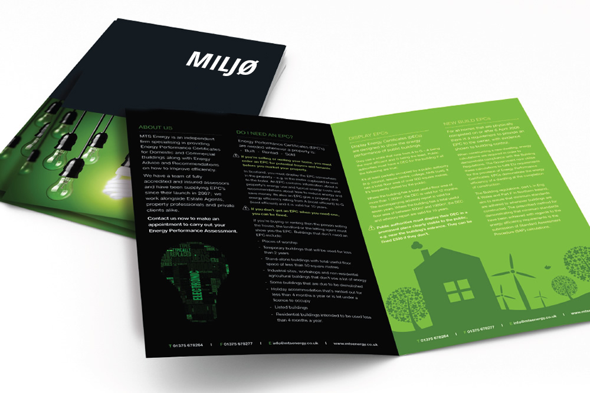
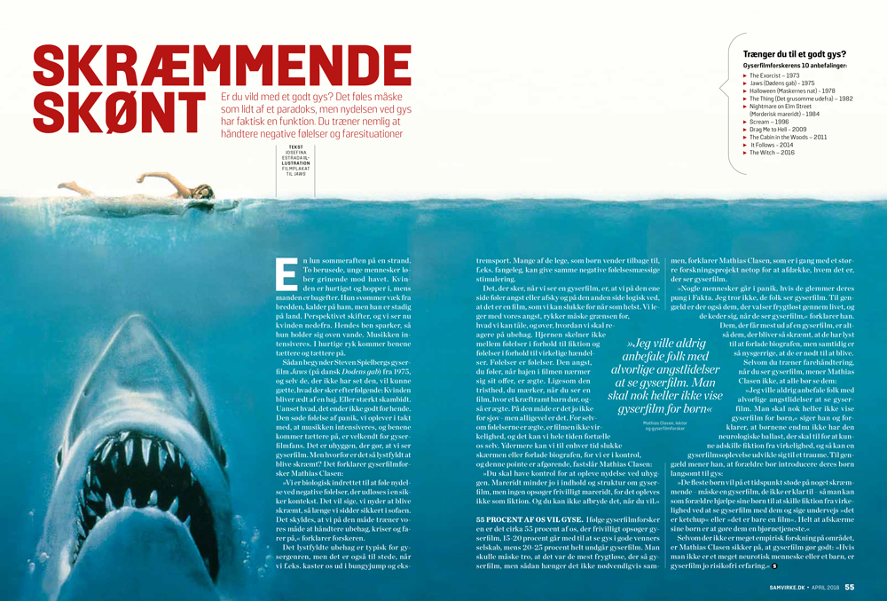

FP9 Dansk, skriftlig fremstilling
1 Skrald, skrot eller bedre vaner
2 Mellem tolv og tolv
3 Skræmmende skønt?
4 Dittes dilemma
Du skal skrive den valgte opgaves nummer og titel på din besvarelse.
2 Mellem tolv og tolv
3 Skræmmende skønt?
4 Dittes dilemma
Du skal skrive den valgte opgaves nummer og titel på din besvarelse.
Før du skriver
Til eleven
Til denne prøve i skriftlig fremstilling har du adgang til internettet.
Du må ikke kommunikere eller dele dine dokumenter med andre under prøven.
Nogle af opgaverne kræver, at du skal søge informationer på internettet til brug for din besvarelse. I andre opgaver er det en åben mulighed at søge fakta og inspiration.
Layoutet af din besvarelse indgår i vurderingen. Tænk derfor på, at du ud over tekst kan inddrage fx billeder og andre grafiske virkemidler.
Hvis du i din besvarelse anvender informationer, citater, billeder eller andre grafiske virkemidler hentet fra internettet, skal du til sidst i besvarelsen angive de væsentlige kilder.
Din besvarelse vurderes på både indhold, sprog og form. Se vurderingskriterierne nedenfor.
God arbejdslyst!
Vurderingskriterier til eleven
Din skriftlige besvarelse bliver vurderet ud fra en helhedsvurdering af tre dimensioner: indhold, sprog og form.
Der gives én karakter.
| Vurderingens tre dimensioner | Vurderingskriterier | Forklaring |
| Tekstens indhold | Opgavens krav | I hvor høj grad opfylder din besvarelse de krav, der er stillet i opgaven? |
| Anvendelse af genre | I hvor høj grad viser din besvarelse sikkerhed i at skrive i genren? | |
| Disponering | I hvor høj grad er din besvarelse hensigtsmæssigt disponeret, så der er tydelig sammenhæng mellem opgavekrav og genre i din tekst? | |
| Søgning og brug af internet | Hvis der i opgaven er stillet krav om, at du skal anvende internettet til at søge inspiration eller information, eller det i øvrigt er relevant, vurderes det, hvordan og i hvor høj grad du kritisk har bearbejdet, anvendt og gjort det til dit eget i din besvarelse. | |
| Kildeangivelse | Hvis der i opgaven er stillet krav om, at du skal anvende internettet, vurderes det, i hvor høj grad de væsentligste kilder fremgår korrekt i besvarelsen. | |
| Tekstens sprog | Sprog | I hvor høj grad er sproget i din besvarelse forståeligt, klart og varieret både med hensyn til ordforråd og syntaks? |
| Retskrivning og tegnsætning | I hvor høj grad er der i din besvarelse anvendt korrekt stavning, og er din tegnsætning sikker? | |
| Tekstens form | Orden og layout | I hvor høj grad fremmer dit layout kommunikationen i forhold til det medie og den genre, du skriver i? |
1 Skrald, skrot eller bedre vaner

En ispind her og et skod der – henkastet affald lever videre i mange år, før det forsvinder.
Du gumler lidt på et stykke tyggegummi. Smagen forsvinder. Du spytter det ud – på gaden.
Det gør i hvert fald mange af os, for hvert fjerde stykke affald, der smides på gaden, er tyggegummi.
Du gumler lidt på et stykke tyggegummi. Smagen forsvinder. Du spytter det ud – på gaden.
Det gør i hvert fald mange af os, for hvert fjerde stykke affald, der smides på gaden, er tyggegummi.
Kilde: Naturen ta'r skraldet – men det varer længe af Sandra Meinecke, politiken.dk, 30.3.2013
Miljøsvineri og menneskeskabt forurening er andet og mere end bortkastning af tyggegummi. Det handler om miljøbevidsthed eller mangel på samme.
I skal på 9. årgang arrangere en kampagne med overskriften Skrald, skrot eller bedre vaner, der skal motivere unge til at tænke og handle miljøbevidst i hverdagen.
Du har fået til opgave at skrive teksten til den folder, der skal bruges til kampagnen.
|
Skriv teksten til kampagnens folder.
Som forberedelse til din kampagnetekst skal du søge informationer om menneskeskabt forurening i hverdagen. I din tekst skal du:
|
2 Mellem tolv og tolv
The Street
Kilde: The Street af Lars Arrhenius, 2007
Et forlag vil udgive en antologi med fiktionstekster skrevet af og for unge. Antologien skal indeholde noveller og kortprosatekster og skal have titlen Mellem tolv og tolv. Afsættet for teksterne skal være animationsfilmen The Street.
Forlaget opfordrer unge med en forfatterspire i maven til at skrive og indsende deres bidrag til antologien.
|
Du skal skrive to tekster: en fiktionstekst og et følgebrev.
Skriv en novelle eller en kortprosatekst til antologien Mellem tolv og tolv. Du skal se animationsfilmen The Street som afsæt for indholdet i din tekst. Din fiktionstekst skal:
I dit følgebrev skal du:
|
3 Skræmmende skønt?
Er du vild med et godt gys? Har mennesket brug for at se frygten i øjnene – eller er gys bare underholdning?
Klik på billedet, og læs artiklen:

Kilde: samvirke.dk
I forbindelse med den årlige Horror Night på Valdemar Slot skal der udgives et magasin om gys. Du er blevet bedt om at skrive et essay til dette magasin.
|
Skriv et essay om fascinationen ved gys.
Som forberedelse skal du læse artiklen Skræmmende skønt fra Samvirke og søge yderligere informationer på internettet. I dit essay skal du blandt andet:
|
4 Dittes dilemma
I en særudgave af radioprogrammet Mads & Monopolet præsenterer værten, Mads Steffensen, et dilemma indsendt af en ung pige, der her kaldes Ditte.
Lyt til denne særudgave af Mads & Monopolet:
Mads & Monopolet
Kilde: Mads & Monopolet, P4, dr.dk
Forestil dig, at Mads & Monopolet har en blog, hvor lyttere kommenterer og debatterer de dilemmaer, der er i programmet.
|
Skriv et blogindlæg med dine overvejelser over, hvad Ditte bør gøre.
Dit blogindlæg skal blandt andet indeholde:
|